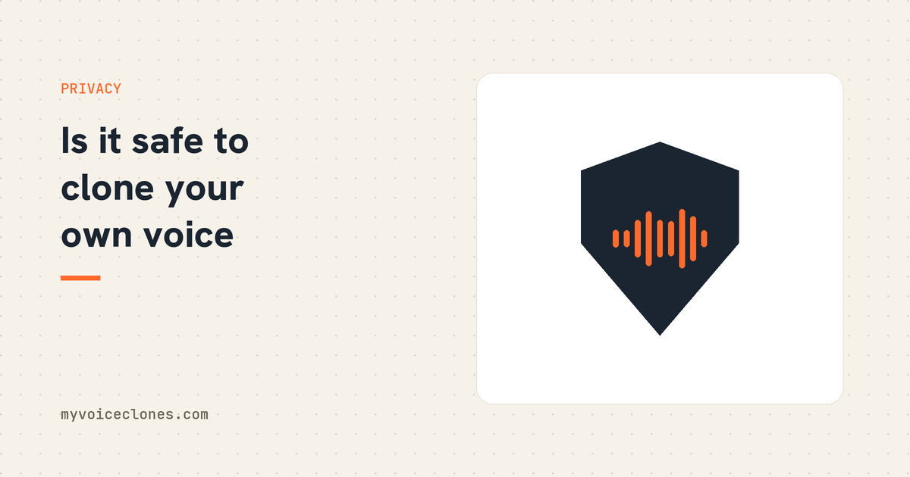

Voice cloning is safe when your recording stays under your control. The real risk is uploading your voice to cloud services, where it is stored under their policies and could leak or be misused. Local tools like VoiceClone avoid this entirely, nothing leaves your computer.
A friend of mine refused to try voice cloning at all, and when I asked why, he said something that stuck with me: "I can change a leaked password, I cannot change my voice." He is not paranoid, he is early. Your voice can open bank phone lines, convince your mother something urgent happened, and sign you into voice verified systems, and unlike every other credential in your life, it is permanent.
So "is voice cloning safe" is really two separate questions, and mixing them up is where most of the fear comes from. One question is about the technology. The other is about where your recording goes.
The technology itself is not the risk
Cloning software is math. It studies a recording and learns to produce sound with the same characteristics. Run on your own computer, it is exactly as dangerous as a photo editor, which is to say the danger lives in what a person does with it, not in the tool existing. I clone my own voice weekly for video narration, and the riskiest thing that has happened is hearing myself mispronounce "SQL" in a way I never would.
The genuine risks live in three places, and it is worth being precise about them.
Risk one: where your recording is stored
When you use a cloud cloning service, your voice sample uploads to their servers and stays there under their retention policy. Most companies are honest actors with real security teams. But you are still trusting that their storage is never breached, their policy never changes, their company is never acquired by someone with different values, and their staff never misuses access. That is four separate bets, held forever, on an asset you cannot rotate.
This is the single reason I built VoiceClone to run entirely on your own PC. Not because cloud companies are villains, but because the safest place for a biometric is nowhere, and a local tool achieves nowhere by design. Your recording is a file on your disk, the clone is a file on your disk, and there is no server in the story to breach.
Risk two: someone cloning you without asking
The uncomfortable truth is that a stranger does not need your cooperation, a few seconds of you from any public video is enough for a rough clone with the shady tools that exist regardless of what honest builders do. Scam calls using cloned voices of family members are real, regulators have been warning about them since 2023, and the defense is unglamorous: agree on a code word with your family for urgent money requests, and treat any panicked call demanding immediate transfer as fake until proven otherwise, because real emergencies survive a callback.
What honest tools can do is refuse to make the problem worse. VoiceClone is built for cloning your own voice, the rules say permission or nothing, and nothing you record ever leaves your machine, so there is no stored voice database anywhere that could leak or be misused. I would not ship it any other way.
Risk three: your own generated audio wandering
A quieter one people forget. If you generate voiceovers on a metered cloud service, your scripts and outputs also live in that account. For personal projects that is nothing, but I have done client work under NDA, and explaining to a client that their unreleased product name passed through a third party voice server is a conversation I prefer to never have. Offline generation makes the whole category of question disappear.
The safe way to clone, in practice
If you take away one habit, take this one: keep the reference recording under your control. Concretely,
- Use a tool where processing happens on your machine, and verify the claim, the crude test is switching off Wi Fi after setup and watching whether generation still works. VoiceClone passes that test, it is fully offline after the one time download.
- Clone only yourself, or with written permission. Not just ethics, increasingly law, which I covered in the legality article.
- Keep your raw recordings. If a clip is ever taken out of context, the originals on your own disk are your proof of what was real and what was generated.
- Treat your long, clean recordings like documents, not like throwaway files. They are the master key to your voice.
FAQ
Can someone steal my voice from a voice cloning app?
From a local app, no, there is nothing transmitted to steal. From a cloud service, your sample sits on their servers, so the honest answer is that it depends on their security and policies holding forever. Check whether the tool works offline, that is the reliable tell.
Is it safe to upload my voice to AI websites?
It is a permanent bet on that company's security and intentions. Reputable services are usually fine, but a voice cannot be changed after a leak like a password can. If the same result is possible without uploading, without uploading is strictly safer.
How do I protect myself from voice cloning scams?
Set a family code word for urgent money requests, call the person back on their known number before acting, and be a little more careful about posting long clean recordings of your voice publicly. Awareness cuts most of the risk.
Does VoiceClone send my voice anywhere?
No. The app runs on your own Windows PC. After the one time setup download you can stay offline permanently, cloning and training included. There is no account and no server.
One test worth doing
Whatever tool you end up choosing, run the airplane test once: finish setup, switch off the internet, and try to generate. Thirty seconds, and you will know more about where your voice actually goes than any privacy page will tell you. If you want a tool that was built to pass that test, the free version is here.
Hear your own voice come back.
The free Windows app clones and fully trains one voice, yours, on your own PC. No account, no upload, and the download starts right away.